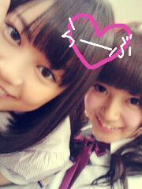

ひめたん大図鑑とは何か。
それは、ひめたんが受験とかテストとかテストとかテストでちょーっと日記書く時間がないぞーって時に登場する、
いわゆる「過去の質問返しをまとめたもの」って感じかな。
過去なので時制とかおかしなことになる質問も中にはあるかもだけど、
ま、そゆことなんでね(*^^*)
648 ひめかサンプラー!大阪!好き(o^o^o)オッケーかな?
ひめかサンプラー!大阪!好き(o^o^o)オッケーかな?
大阪!好きー!
もちろんおっけー◎
ひめたんのことよくわかってますね(^ω^)
649握手会のィイ所はなんですか??
1人1人のファンの方と握手できて、お話しできるところ!
実際にお顔見たいし、声聞きたいし♪
直接会った方がひめたんのこともっと知っていただけると思う(^^)
650ひめたんがセンターとれるまで、全力で応援し続けていってもいいですか??ぃや、ずっと好きでいていいですか?
言いましたね?
ずっと好きでいてくださいよ(//ω//)?
そんなこと言ってもらえるなんて嬉しい!
もちろんいいに決まってるじゃないですかー♪
651大阪のイベントからひめたんのファンになったんだけど遅すぎたかな?大丈夫かな?
うん大丈夫っ。
遅いなんてことないですよー♪
今からどんどんひめたんのこと知ってくれたら嬉しいです∩^ω^∩★
652握手会楽しそうじゃけど、めっちゃ緊張しそう(汗)
どうやって緊張をほぐしてくれる?
ひめたんと握手してたら緊張なんてどっか行っちゃうと思う...
だって緊張させる暇を与えないもんっ(^ω^)/
653大阪のミニ握ではネタにこまったけど次ひめたんと握手する時は何て言ったら良いんやろ?
本当に困ったらひめかサンプラー使ったらいいと思うし、
自己紹介をしてもらっても、ひめたんが自己紹介するのもいいと思う★
654イベントで地方行ったりしたら観光は出来ないにしても少しでもゆっくりする時間はあるのカナ?
そうですねー。
夕方にイベントが終わって、美味しいもの食べてお土産買って
ホテルびゅーんからの朝出発って感じですかね(・ω・)
街の雰囲気なら移動中の新幹線や車で味わってますよ♪
時間があれば観光にも行きたいんだけどねー(^^)
655広島でなにしたん!?
イベントして、お好み村行った!
実は広島県民って普段からお好み村行ったりしないんですよねー。
そうですよねみなさん?
おうちで焼いたり、近くのお店で食べるからね。
ひめたんはお好み村初めて行ったもんっ
656ひめたん、雪には慣れてる??
いいやまったくですよ(・ω・)
東京の雪が何日経っても溶けてないことに最近びっくりしたばっかりなのにー!!
657滋賀や富山で美味しいもの食べられたかな?
滋賀→うばがもち
富山→お寿司
食べました∩^ω^∩★
美味しかったよーっ
658大阪の握手会で推しになったんやけど推していいかな?ww
うっひょい(o>ω<o)!
もちろん推して下さいな♪♪
また大阪に会いに行くねー!
659滋賀は楽しんでくれましたか?(o^_^o)
はいっ!!!
めっちゃめっちゃ楽しみましたあ!!!
(*゜∞゜)ノくるっくー♪
660ひこにゃんには会えた?
それが、滋賀では会えなかったの(>_<)
まさかの京都のお土産やさんでひこにゃん会いました♪
ひこにゃあんっ(ω)
661今更だけどひめたんのこと推してもいいかな?
いまさらとか全然ないですよっ(^ω^)/
ありがとうございます!期待に応えられるよう頑張るね♪
662滋賀のリサーチはどうでしたか?活かせたかな?
663リサーチは役にたったかな?
やっぱひめたんリサーチだけだといまいち足んない感あったから
みなさんに助けてもらってよかった(^^)!
ご協力ありがとうございました。
(＊´・ω・＊)ひめたん
ひめたん大図鑑とは何か。
それは、ひめたんが受験とかテストとかテストとかテストでちょーっと日記書く時間がないぞーって時に登場する、
いわゆる「過去の質問返しをまとめたもの」って感じかな。
過去なので時制とかおかしなことになる質問も中にはあるかもだけど、
ま、そゆことなんでね(*^^*)
648
ひめかサンプラー!大阪!好き(o^o^o)オッケーかな?大阪!好きー!
もちろんおっけー◎
ひめたんのことよくわかってますね(^ω^)
649
握手会のィイ所はなんですか??1人1人のファンの方と握手できて、お話しできるところ!
実際にお顔見たいし、声聞きたいし♪
直接会った方がひめたんのこともっと知っていただけると思う(^^)
650
ひめたんがセンターとれるまで、全力で応援し続けていってもいいですか??ぃや、ずっと好きでいていいですか?言いましたね?
ずっと好きでいてくださいよ(//ω//)?
そんなこと言ってもらえるなんて嬉しい!
もちろんいいに決まってるじゃないですかー♪
651
大阪のイベントからひめたんのファンになったんだけど遅すぎたかな?大丈夫かな?うん大丈夫っ。
遅いなんてことないですよー♪
今からどんどんひめたんのこと知ってくれたら嬉しいです∩^ω^∩★
652
握手会楽しそうじゃけど、めっちゃ緊張しそう(汗)どうやって緊張をほぐしてくれる?
ひめたんと握手してたら緊張なんてどっか行っちゃうと思う...
だって緊張させる暇を与えないもんっ(^ω^)/
653
大阪のミニ握ではネタにこまったけど次ひめたんと握手する時は何て言ったら良いんやろ?本当に困ったらひめかサンプラー使ったらいいと思うし、
自己紹介をしてもらっても、ひめたんが自己紹介するのもいいと思う★
654
イベントで地方行ったりしたら観光は出来ないにしても少しでもゆっくりする時間はあるのカナ?そうですねー。
夕方にイベントが終わって、美味しいもの食べてお土産買って
ホテルびゅーんからの朝出発って感じですかね(・ω・)
街の雰囲気なら移動中の新幹線や車で味わってますよ♪
時間があれば観光にも行きたいんだけどねー(^^)
655
広島でなにしたん!?イベントして、お好み村行った!
実は広島県民って普段からお好み村行ったりしないんですよねー。
そうですよねみなさん?
おうちで焼いたり、近くのお店で食べるからね。
ひめたんはお好み村初めて行ったもんっ
656
ひめたん、雪には慣れてる??いいやまったくですよ(・ω・)
東京の雪が何日経っても溶けてないことに最近びっくりしたばっかりなのにー!!
657
滋賀や富山で美味しいもの食べられたかな?滋賀→うばがもち
富山→お寿司
食べました∩^ω^∩★
美味しかったよーっ
658
大阪の握手会で推しになったんやけど推していいかな?wwうっひょい(o>ω<o)!
もちろん推して下さいな♪♪
また大阪に会いに行くねー!
659
滋賀は楽しんでくれましたか?(o^_^o)はいっ!!!
めっちゃめっちゃ楽しみましたあ!!!
(*゜∞゜)ノくるっくー♪
660
ひこにゃんには会えた?それが、滋賀では会えなかったの(>_<)
まさかの京都のお土産やさんでひこにゃん会いました♪
ひこにゃあんっ(ω)
661
今更だけどひめたんのこと推してもいいかな?いまさらとか全然ないですよっ(^ω^)/
ありがとうございます!期待に応えられるよう頑張るね♪
662
滋賀のリサーチはどうでしたか?活かせたかな?663
リサーチは役にたったかな?やっぱひめたんリサーチだけだといまいち足んない感あったから
みなさんに助けてもらってよかった(^^)!
ご協力ありがとうございました。
(＊´・ω・＊)ひめたん
 ケーキ争奪戦毎回あるんだよね?最近は誰が一番ケーキをたくさんゲットしてるの?
ケーキ争奪戦毎回あるんだよね?最近は誰が一番ケーキをたくさんゲットしてるの? 「ひめかサンプラー」わざとひめたんの好きそうなものだけ質問して、
「ひめかサンプラー」わざとひめたんの好きそうなものだけ質問して、 ひめたんがあのPVで恥ずかしかったセリフとかあったんっ?笑
ひめたんがあのPVで恥ずかしかったセリフとかあったんっ?笑 地元広島を始め、大阪、滋賀、富山でイベントが出来ることをいまはどう思ってますか？
地元広島を始め、大阪、滋賀、富山でイベントが出来ることをいまはどう思ってますか？ テストの前日に何かやってる事ってありますか？
テストの前日に何かやってる事ってありますか？ 昨日からのスケジュールを教えてー出演情報とか
昨日からのスケジュールを教えてー出演情報とか 何か忘れてない？
何か忘れてない？ 桜井さんはメンバーでも怜香せんせいって呼ばれちゃってるんですかww
桜井さんはメンバーでも怜香せんせいって呼ばれちゃってるんですかww